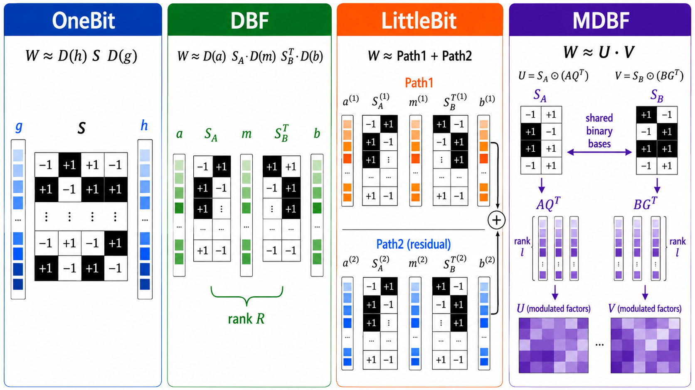

MDBF (Multi-Envelope Double Binary Factorization)¶
MDBF is an extreme compression method that extends DBF with multiple residual
paths and rich, multi-scale amplitude envelopes around the binary factors. It targets
roughly 1--2 bit quantization, with the achieved bit-width tuned continuously through the
target_bits parameter.
The differences among OneBit, DBF, LittleBit, and MDBF are illustrated below:

Algorithm¶
MDBF approximates each weight matrix \(W \in \mathbb{R}^{n \times m}\) as a sum of \(P\) low-rank, double-binary paths:
where each path factorizes a binary core scaled by amplitude envelopes:
and \(\odot\) is the element-wise (Hadamard) product. Per path:
- \(S_A \in \{-1, +1\}^{n \times r}\) and \(S_B \in \{-1, +1\}^{r \times m}\) are the binary
sign matrices, stored at 1 bit per element (packed into
uint8). - \(A_{\text{amp}} \in \mathbb{R}^{n \times l}\), \(B_{\text{amp}} \in \mathbb{R}^{m \times l}\), \(Q_{U,\text{amp}} \in \mathbb{R}^{r \times l}\), \(Q_{V,\text{amp}} \in \mathbb{R}^{r \times l}\) are the multi-scale amplitude envelopes (FP16) that provide dynamic range.
The rank \(r\) is the main capacity knob; the multi-scale rank \(l\) controls how expressive the amplitude envelopes are, and \(P\) adds residual paths that capture what a single factorization cannot.
Choosing \(l\) and \(P\)¶
At a matched bit budget, \(l\) and \(P\) compete for the same bits: raising either one
shrinks the rank \(r\). MDBF's finding is that spending them on magnitude expressiveness
(larger \(l\)) beats spending them on sign diversity (larger \(P\)). Two settings are
degenerate and reproduce the baselines MDBF is measured against: \((l, P) = (1, 1)\) is
DBF and \((1, 2)\) is LittleBit. The default \((2, 1)\) is the smallest genuinely
multi-envelope setting; larger \(l\) (4, 8, 16) usually improves quality further at
the cost of rank and optimization time.
The matrix shape caps the reachable BPW
The rank is clamped to \(r \leq \min(n, m)\), so with \(s = \min(n, m)\) and \(t = \max(n, m)\) the achievable BPW cannot exceed
A target_bits above \(b_{\max}\) is clamped and the layer lands below the requested
budget, with a warning in the log. Halving \(P\) halves the ceiling, so P=1 reaches
it sooner on strongly rectangular matrices such as MLP projections; for LLM-sized
matrices the ~1 bit range MDBF targets is normally unaffected. Use P=2 if a higher
target_bits is being clamped.
l > 1 disables the GemLite fast path by default
GemLite 1-bit kernels are auto-enabled only for l == 1; with a rank-\(l\) envelope
they are slower than dense, so MDBFLinear falls back to dense matmuls. Pass
use_gemlite=True to force them, or quantize with l=1.
Compared with DBF — which uses a single factorization \(W \approx A \cdot \text{diag}(d) \cdot B\) with one diagonal scaling vector — MDBF replaces the single scale vector with four rank-\(l\) envelope matrices per path and sums over \(P\) paths, giving finer control over the accuracy/size trade-off at extreme bit-widths.
Bit-width and rank¶
With scale_bits accounting for the FP16 amplitude storage, the effective bits-per-weight
(BPW) for a chosen rank \(r\) is:
Given a target BPW \(b\), the rank is selected by inverting this relation:
scale_bits is an accounting parameter only: it sizes the rank and the reported BPW to
include the amplitude overhead, but it does not change the dtype the scales are stored in
(they remain FP16). The default is 16 (FP16); set it to 0 to size the rank from the
binary matrices alone.
Optimization pipeline¶
MDBF runs in up to three phases:
- Initialization -- a low-rank decomposition produces the initial binary signs and
amplitude envelopes per path. The base mode is set by
svd_mode(plain"svd", or Hessian-weighted"svd_llm"). The activation-aware initialization selected byact_init("osvd"/"svd_llm") only takes effect whenactivation_aware=True-- which itself requiresP=1and an available Hessian; otherwiseact_initis ignored and initialization followssvd_mode. - ADMM -- Alternating Direction Method of Multipliers refines the binary signs and amplitude scales to minimize the reconstruction error (optionally Hessian-weighted).
- Gradient refinement (optional) -- gradient descent on the amplitude scales for a final reduction of the quantization error.
Parameters¶
| Parameter | Type | Description | Default |
|---|---|---|---|
target_bits |
float |
Target bit-width / BPW (e.g., 1.0) |
1.0 |
l |
int |
Multi-scale rank of the amplitude envelopes (\(\geq 1\)); 1 degenerates to a single envelope |
2 |
P |
int |
Number of residual paths (1 or 2) |
1 |
svd_mode |
str |
Initialization SVD mode: "svd" or Hessian-weighted "svd_llm" |
"svd" |
use_admm |
bool |
Enable ADMM refinement | True |
admm_outer_iters |
int |
ADMM outer iterations | 260 |
admm_inner_iters |
int |
ADMM inner iterations | 3 |
admm_reg |
float |
ADMM regularization coefficient | 0.03 |
admm_seed |
Optional[int] |
Random seed for the randomized SVD initialization inside the ADMM projection. MDBF allows non-negative seeds up to \(2^{64}-1\) (Torch's upper limit). None draws from the global RNG, so results depend on the ambient RNG state; an integer makes the ADMM phase reproducible independently of it |
None |
use_gradient_refine |
bool |
Enable gradient-based amplitude refinement | False |
gradient_iters |
int |
Gradient refinement iterations | 1000 |
gradient_lr |
float |
Gradient refinement learning rate | 0.01 |
activation_aware |
bool |
Use Hessian-based activation-aware optimization. Requires P=1 and an available Hessian; otherwise it is automatically disabled with a warning |
False |
act_init |
str |
Activation-aware init mode: "none", "osvd", or "svd_llm". Only used when activation_aware is actually active (P=1, Hessian available); ignored otherwise |
"osvd" |
scale_bits |
int |
Bit-width used to account for the FP16 amplitude scales when sizing the rank / reporting BPW (\(\geq 0\); 0 = binary-only) |
16 |
mlp_target_bits |
Optional[float] |
Override target_bits for layers whose name contains "mlp" |
None |
module_target_bits |
Optional[dict[str,float]] |
Per-layer override of target_bits, keyed by exact layer name (highest priority) |
None |
Usage¶
Quick Start¶
For a first run, use a small model (TinyLlama) and a lightweight calibration configuration. This verifies the pipeline end-to-end in a few GB of GPU memory.
from onecomp import CalibrationConfig, MDBF, ModelConfig, Runner
model_config = ModelConfig(
model_id="TinyLlama/TinyLlama-1.1B-intermediate-step-1431k-3T",
device="cuda:0",
)
calib_config = CalibrationConfig(
max_length=512,
num_calibration_samples=128,
)
mdbf = MDBF(target_bits=1.0)
runner = Runner(
model_config=model_config,
quantizer=mdbf,
calibration_config=calib_config,
)
runner.run()
Recommended Configuration¶
For production use, run with longer sequences and more calibration samples to improve
quality. Like DBF, MDBF holds additional fp32 buffers during ADMM in addition to the model
weights, so per-forward GPU memory consumption is higher than GPTQ. To avoid
CUDA out of memory on larger models such as Llama-2-7B, set CalibrationConfig.batch_size
to enable chunked calibration.
from onecomp import CalibrationConfig, MDBF, ModelConfig, Runner
model_config = ModelConfig(
model_id="meta-llama/Llama-2-7b-hf",
device="cuda:0",
)
calib_config = CalibrationConfig(
max_length=2048,
num_calibration_samples=128, # Increase to 256-512 for higher accuracy
batch_size=32, # Tune to GPU free memory (8-32)
)
mdbf = MDBF(target_bits=1.0, l=2, P=1) # the defaults; raise l for more accuracy
runner = Runner(
model_config=model_config,
quantizer=mdbf,
calibration_config=calib_config,
)
runner.run()
Per-layer bit-width overrides¶
target_bits can be overridden per layer. The priority is
module_target_bits (exact layer name) > mlp_target_bits (any layer whose name contains
"mlp") > target_bits:
mdbf = MDBF(
target_bits=1.0,
mlp_target_bits=1.5, # spend more bits on MLP layers
module_target_bits={"model.layers.0.self_attn.q_proj": 2.0},
)
Tuning batch_size to your GPU
CalibrationConfig.batch_size controls the number of calibration sequences forwarded
through the model at once, and is the main knob for peak GPU memory. Rough guideline:
- H100 (80 GB):
batch_size=32 - A100 (40 GB):
batch_size=16 - When sharing the GPU with other processes:
batch_size=8
If you still hit CUDA out of memory, halve the value until the run succeeds.
Reproducibility¶
The ADMM projection initializes its randomized SVD (block power iteration) at random.
Set admm_seed to make that initialization deterministic, independent of how many random
numbers the rest of the pipeline (calibration sampling, other layers) has already drawn:
Seeding the rest of the pipeline
admm_seed covers the ADMM phase only. The initialization phase stabilizes its SVD
with a small random perturbation drawn from the global RNG, so seed that separately
with torch.manual_seed() for an end-to-end reproducible run.
Save and Load¶
MDBF models can be saved in a format compatible with the OneComp loader:
runner.save_quantized_model("./output/mdbf_model")
# Load later
from onecomp import load_quantized_model
model, tokenizer = load_quantized_model("./output/mdbf_model")
At inference, each layer is reconstructed by the MultipathMDBFLinear layer, which holds
\(P\) per-path MDBFLinear sub-layers. The binary sign matrices are stored packed into
uint8 (8:1) and unpacked on the fly, while the amplitude envelopes are kept in FP16.